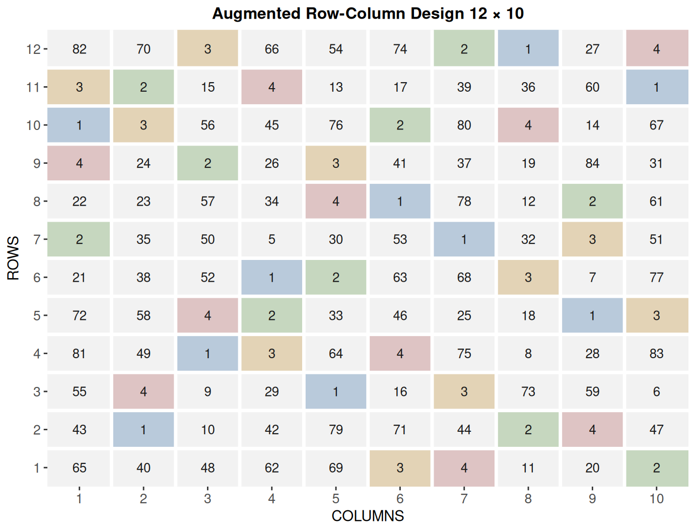
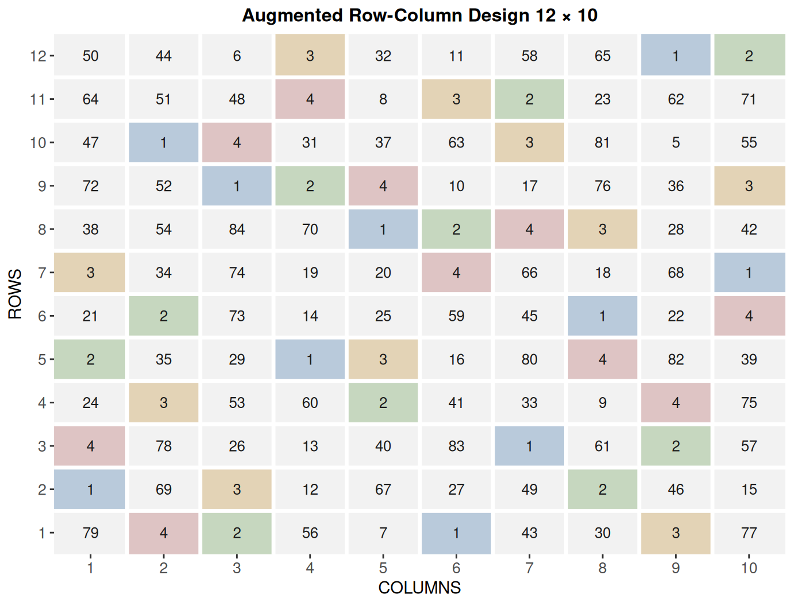

Augmented Row-Column Design¶
Use an augmented row-column design when field variation runs in two directions and most new entries can be tested only once. This guide shows how to repeat checks across field rows or columns, compare design criteria, and export the randomized layout.
This guide uses features introduced in FielDHub 1.7.0. See installation and version instructions.
Related guides: Augmented Randomized Complete Block Design, Partially Replicated (p-rep) Design.
This vignette shows how to generate an augmented row-column design using both the FielDHub Shiny App and the scripting function augmented_row_column() from the FielDHub package.
Overview¶
In early-generation trials there is usually seed for only one plot of each test entry. Augmented designs replicate a small number of checks across the field so that field trends and the residual variance can be estimated and the unreplicated tests can be compared.
An augmented row-column design controls field variation in two directions, rows and columns, in one complete rectangular field. In FielDHub’s version every check appears exactly once in every field line along one direction (every column, or every row), and every test entry appears exactly once.
FielDHub already offers two check-based designs. RCBD_augmented() blocks in one direction, and diagonal_arrangement() places checks in a systematic diagonal pattern. augmented_row_column() places the checks so that both row and column effects are estimable and then searches the check positions under a chosen statistical criterion.
Features include the field dimensions, the number of checks (or the check labels), test labels or an uploaded entry list, the check direction, one of three search criteria, multiple locations, serpentine or cartesian plot numbering, and reproducible results from a recorded seed.
Attribution¶
The construction is that of Piepho and Williams (2026): an augmented row-column design generated from a small auxiliary array called a contraction. They show that the efficiency of the contraction and of the augmented design are closely linked, so a design can be described and searched through the small contraction rather than the whole field.
The square-array foundation is Bailey and Haines (2025): square fields (\(v = s\)) represented through a \(k \times t\) auxiliary block design, with results on connectedness and randomization. Square fields in FielDHub include these square-array designs.
FielDHub’s own contribution is the search for the check positions, the restricted placement rules adopted here, the orientation handling, the field book and the app. The search described below is FielDHub’s own method. It is not part of the published construction, and the published articles are not responsible for it.
All computation is FielDHub code. No published design is copied into the package; published layouts are cited only as literature.
The method¶
Notation¶
The method works in a mathematical orientation with \(v\) rows and \(s\) columns, in which each check appears once in every mathematical column. The section on the check direction explains how this maps to physical field rows and columns.
| Symbol | Meaning |
|---|---|
| \(v\) | Plots in each line along the check direction (mathematical rows) |
| \(s\) | Lines along the check direction (mathematical columns) |
| \(k\) | Number of checks, \(2 \le k < v\) |
| \(n = vs\) | Number of plots |
| \(T = (v - k)s\) | Number of test entries, each on one plot |
| \(v^* = T + k\) | Number of treatments (tests plus checks) |
| \(u\) | Replications: 1 for each test, \(s\) for each check |
| \(r_h\) | Number of check plots in mathematical row \(h\) |
Every check occupies \(s\) plots, so the checks take \(ks\) plots and the tests the remaining \((v-k)s\).
The contraction¶
The check positions are described by a \(k \times s\) matrix \(L\), the contraction. Its entry \(L_{ij} \in \{1, \dots, v\}\) is the row that holds check \(i\) in column \(j\). Expanding \(L\) places check \(i\) at field cell \((L_{ij}, j)\); the test entries fill the other \(T\) cells (Piepho and Williams 2026).
Reading the columns of \(L\) as blocks, \(L\) is a small block design for \(v\) “pseudo-treatments” (the field rows) in \(s\) blocks of size \(k\). For square fields this is the auxiliary block design of Bailey and Haines (2025).
FielDHub enforces a restricted placement. This is the restricted mode adopted for FielDHub, matching the binary contractions of Piepho and Williams (2026):
- \(s \le v\);
- no repeat within a column of \(L\): two checks never share a plot;
- no repeat within a row of \(L\): no check appears twice in the same mathematical row;
- balanced row loads: every \(r_h \ge 1\) and \(r_h \in \{\lfloor ks/v \rfloor, \lceil ks/v \rceil\}\), with \(\sum_h r_h = ks\). In words: every cross-line carries between \(\lfloor ks/v \rfloor\) and \(\lceil ks/v \rceil\) check plots, at least one.
Other placements, such as letting a check repeat within a cross-line, are not offered.
Model¶
with fixed treatment effects \(\tau\) (tests and checks), fixed row effects \(\rho\), fixed column effects \(\gamma\) and independent errors. \(X\) (\(n \times v^*\)), \(Z_R\) (\(n \times v\)) and \(Z_C\) (\(n \times s\)) are the plot-level design matrices.
The treatment information matrix is
All variances are reported in units of \(\sigma^2\): for treatments \(a\) and \(b\),
where \(e_a\) is the \(a\)-th unit vector and \(C^{-}\) a generalized inverse of \(C\).
Connectivity and residual degrees of freedom¶
A design is connected when every treatment comparison is estimable. FielDHub decides this from the eigenvalues of an information matrix, not from a pivoted QR rank, and a design that is not connected is never scored or returned.
A connected design has
residual degrees of freedom (the \(n\) plots minus the \(v^* + (v - 1) + (s - 1)\) estimated effects). It depends only on \(v\), \(s\) and \(k\), never on where the checks are placed.
Fields with \(\mathrm{df} < 1\) are rejected before any search: the residual variance could not be estimated. The section on residual degrees of freedom covers fields with fewer than 10.
How FielDHub searches the check positions¶
The search works on the contraction \(L\), not on the full field. It keeps every candidate within the restricted placement rules and discards candidates that are not connected.
The available method is method = "staged": staged annealing with recoloring restarts. Each restart:
- starts from a random balanced contraction;
- anneals the column composition of \(L\) (which rows each column uses), scored by a fast column-design efficiency proxy;
- re-arranges the rows of \(L\) by several random recolorings (re-assignments of which check takes which row within each column, keeping the column composition) and anneals the row arrangement under the chosen objective;
- anneals rows and columns jointly under the chosen objective;
- finishes with a short local polish that accepts only improvements.
In square fields (\(v = s\)) every row arrangement gives the same objective value, so the row phase is skipped and its share goes to the column phase.
Budget. budget is the number of objective-function calls allowed per location, shared by all restarts and phases; proxy calls count against it too. The search stops when the budget is spent. Final scoring of the returned design is outside the budget. The internal parameters (restarts, recolorings, phase shares, temperatures) are fixed by the package and are not user settings. When budget is not given, a default budget that depends on the field size is used; the rule is stated in ?augmented_row_column.
No silent fallback. If no connected starting design is found within a bounded number of tries, or the budget or time limit runs out before any design is produced, the function stops with a fieldhub_arc_search_error; it never switches to another method.
Only "staged" is accepted.
The search returns the best design it found within the budget; it does not prove that no better design exists.
Randomization¶
After the search, from the same seed stream:
- the mathematical rows and columns are permuted uniformly at random;
- the \(k\) check labels receive one global random permutation;
- the test entries are assigned to the test plots by a uniform random permutation;
- the result is mapped to physical
ROWandCOLUMN.
Check occurrences are never shuffled one by one, because that could break the placement rules. None of these steps changes any objective value. Uniform row and column permutations give a valid randomization in the sense discussed by Bailey and Haines (2025) (their Section 3.3). The returned contraction and statistics describe the final, randomized placement, not the search’s internal output.
Search objectives¶
The search optimizes one of three criteria, chosen with objective. All three, plus the check-versus-check variance and the two worst-case variances, are reported for every location whichever is optimized.
objective |
Definition | Direction |
|---|---|---|
"V_tt" |
Mean of \(\operatorname{Var}(\hat\tau_a - \hat\tau_b)/\sigma^2\) over all \(\binom{T}{2}\) pairs of test entries | Minimize |
"V_tc" |
Mean over all \(Tk\) test-versus-check pairs | Minimize |
"E_aug" |
Harmonic mean of the \(v^* - 1\) nonzero eigenvalues of \(A^* = \operatorname{diag}(u)^{-1/2}\, C \operatorname{diag}(u)^{-1/2}\): the average efficiency factor of Piepho and Williams (2026) | Maximize |
Reported only: V_cc (mean over the check pairs), max_tt and max_tc (largest test-versus-test and test-versus-check variance).
V_ttis the precision of comparisons among unreplicated entries, the usual purpose of a selection trial.V_tcis the precision of comparing entries with the standard checks.E_augis the average efficiency relative to a completely randomized design with the same replications.
The criteria are related by
E_aug therefore weights each test-versus-test pair by 1, each test-versus-check pair by \(s\) and each check-versus-check pair by \(s^2\), so it emphasizes comparisons involving checks more than V_tt does.
In square row- and column-binary designs the three criteria rank designs identically (Bailey and Haines 2025). In rectangular fields they can rank two designs differently, which is why all three are reported.
The default objective is currently "V_tt". Pass objective and budget explicitly when a result must be reproducible across package versions. Reproduction code always records both.
Check direction¶
check_direction is required, with no default. It names the physical direction along which every check appears once per line:
"columns": each check appears once in every field column, so \(v\) =nrowsand \(s\) =ncols;"rows": each check appears once in every field row, so \(v\) =ncolsand \(s\) =nrows.
The choice is never inferred from the field shape and the field is never turned silently. It is recorded in infoDesign, in the recorded parameters and in the CHECK_DIRECTION column of the field book.
The design needs \(s \le v\). A field and direction with \(s > v\) are rejected before any random number is drawn, with an error naming the other direction (see the examples below).
Choose the direction along which you want every check represented in every line, for example along the planting or harvesting pass.
ROW and COLUMN in the field book are always the physical field coordinates. Because the field book also carries CHECK_DIRECTION, a CSV export alone is enough to recompute the orientation and verify that each check appears once per line.
Residual degrees of freedom¶
- \(\mathrm{df} < 1\): rejected (no residual variance estimate).
- \(1 \le \mathrm{df} < 10\): allowed, with a warning (
fieldhub_arc_low_df_warning) at construction, and a persistent notice printed byprint()andsummary()every time.
The warning states the df and, under independent normal errors, the relative standard deviation of the residual-variance estimate, \(\sqrt{2/\mathrm{df}}\) (about 82% at 3 df, 45% at 10 df).
Only adding a check or changing the number of rows or columns raises the residual degrees of freedom. Because df depends only on \(v\), \(s\) and \(k\), a longer search or another objective never changes it.
For example, the 12 × 8 field with three checks in the upload example below has \(\mathrm{df} = 3 \cdot 8 - 3 - 12 - 8 + 2 = 3\). This field geometry is one tabulated by Piepho and Williams (2026) (their Table 1).
Use case¶
A breeding program needs to test 80 lines with four checks at two locations, FARGO and CASSELTON, in a field of 12 rows and 10 columns at each location. Every check must appear once in every field column. The field has \(12 \times 10 = 120\) plots: each of the four checks takes one plot in each of the 10 columns (40 check plots), and the 80 lines fill the remaining plots. The design has \(4 \cdot 10 - 4 - 12 - 10 + 2 = 16\) residual degrees of freedom.
Running the Shiny App¶
To launch the app you need to run either
FielDHub::run_app()
or
library(FielDHub)
run_app()
1. Using the FielDHub Shiny App¶
Once the app is running, go to Unreplicated Designs > Augmented Row-Column.
Inputs¶
- Import entries’ list?
Nogenerates labels from the counts.Yesuploads a.csvfile with exactly the columnsENTRYandNAME(as for the diagonal arrangement):ENTRYdistinct positive whole numbers,NAMEdistinct non-blank labels, the checks in the first rows. The file must have one row per check plus one row per test plot. This example shows the format with three checks and the first seven lines; a real file has one row per test plot.
| ENTRY | NAME |
|---|---|
| 1 | Check-1 |
| 2 | Check-2 |
| 3 | Check-3 |
| 4 | Line 001 |
| 5 | Line 002 |
| 6 | Line 003 |
| 7 | Line 004 |
| 8 | Line 005 |
| 9 | Line 006 |
| 10 | Line 007 |
- Input # of Rows: and Input # of Columns: the field size (12 and 10 in the use case).
- Input # of Entries: the number of test entries (shown only without an upload). It must equal the number of test plots, \(T\) = rows × columns − checks × \(s\) (80).
- Input # of Checks: the number of checks, at least 2 (4).
- Each check appears once in every:
columnorrow. No default: it must be chosen (column). - Search objective:
V_tt: test versus test variance,V_tc: test versus check varianceorE_aug: efficiency of all comparisons. The value selected when the page opens is the default,V_tt. - Input # of Locations: and the location names (2;
FARGO, CASSELTON). - Plot Order Layout:
serpentineorcartesian. - Starting Plot Number:, Input Experiment Name:, Random Seed: as in the other spatial designs (one starting plot per location, comma separated).
- Year (blank = current): the
YEARcolumn; the effective year is recorded. - Show advanced search options: reveals Search budget per location (blank = default): and Time limit per location in seconds (blank = none):. A blank budget uses the size-based default, and a time limit makes replay timing-dependent (see “Reproducing a design”).
Then, click Run!, then Randomize!. While the search runs the active tab shows “Searching for a balanced design…”; a field-scale search can take tens of seconds per location.
Outputs¶
After you run an augmented row-column design in FielDHub, the results are displayed in these tabs:
- Get Random: the run controls and the design summary, which includes the per-location statistics and any low-df notice.
- Data Input: the list of entries and the table of checks.
- Field Layout: checks colored by check and tests in a neutral color, with PNG, PDF and CSV buttons at the top right.
- Plot Number Field: the plot numbers laid out over the field.
- Field Book: the full table, with the
CHECK_DIRECTIONcolumn; downloadable as plain CSV. - Heatmap: simulated data, as on the other spatial pages.
The design can be downloaded as a saved result (RDS) or as a standalone R script; the section “Reproducing a design” explains what the script reproduces.
2. Using the FielDHub function: augmented_row_column()¶
First, load the package.
library(FielDHub)
Inputs of augmented_row_column()¶
checks: a count \(k \ge 2\) gives labelsCH1, …,CHk; or a character vector of at least two distinct, non-missing, non-blank labels, used in that order.entries:NULL(default) fills every test plot with labelsG(k+1), …,G(k+T); a count must equal \(T\) and gives the same labels; a character vector of distinct labels must have length \(T\).- Check and test labels must differ. Labels are kept exactly as given, including spaces and punctuation, and are compared exactly.
data: an entry table with exactly the columnsENTRY | NAME. Withdata,checksmust be the count \(k\) (the first \(k\) rows are the checks), andentriesmust beNULL; supplying both is an error naming the conflict, never a silent choice. The table must have \(k + T\) rows.ENTRYin the field book:1..kfor checks andk+1..k+Tfor tests withoutdata; the uploaded values withdata.exptNamedefaults to"Expt1",yearto the current year,locationNamesto1..l; the effective values are recorded, so a later replay reproduces them.
Then, you can enter the information describing the above design like this. A small budget keeps this example fast; the objective and method are given explicitly so the example does not depend on the defaults.
arc <- augmented_row_column(
nrows = 12,
ncols = 10,
checks = 4,
check_direction = "columns",
objective = "V_tt",
method = "staged",
budget = 500,
l = 2,
plotNumber = c(1001, 2001),
locationNames = c("FARGO", "CASSELTON"),
exptName = "ARC_2026",
year = 2026,
seed = 2026
)
Details on the inputs entered in augmented_row_column() above¶
nrows = 12,ncols = 10: the field size, 120 plots per location.checks = 4: four checks, labeledCH1toCH4.check_direction = "columns": every check appears once in every field column, so \(v = 12\) and \(s = 10\).entriesis not given, so the 80 test plots get the labelsG5toG84.objective = "V_tt": minimize the mean test-versus-test variance.method = "staged": the only search method.budget = 500: at most 500 objective calls per location. This is far below the default and is used only to keep the example fast; it says nothing about the quality of the result.l = 2,plotNumber = c(1001, 2001),locationNames = c("FARGO", "CASSELTON"): two locations, each with its own first plot number.exptName,year: recorded in theEXPTandYEARcolumns.seed = 2026: the seed. Location \(i\) runs with seed2026 + i - 1.
Print arc output¶
print() shows, for every location, the residual df, the value of the optimized objective, all three objectives, the worst-case variances and the search status.
print(arc)
Augmented Row-Column Design
Statistics by location (variances in units of the residual variance):
Location FARGO:
Residual df: 16
Optimized objective: V_tt = 3.477 (minimized)
E_aug = 0.5861, V_tt = 3.477, V_tc = 1.837
max_tt = 4.25, max_tc = 2.008
Search status: ok
Location CASSELTON:
Residual df: 16
Optimized objective: V_tt = 3.483 (minimized)
E_aug = 0.585, V_tt = 3.483, V_tc = 1.84
max_tt = 4.233, max_tc = 2
Search status: ok
Information on the design parameters:
List of 15
$ nrows : int 12
$ ncols : int 10
$ check_direction: chr "columns"
$ v : int 12
$ s : int 10
$ k : int 4
$ checks : chr [1:4] "CH1" "CH2" "CH3" "CH4"
$ entries : int 80
$ locations : num 2
$ locationNames : chr [1:2] "FARGO" "CASSELTON"
$ residual_df : int 16
$ objective : chr "V_tt"
$ method : chr "staged"
$ budget : num 500
$ seed : num 2026
10 First observations of the data frame with the augmented_row_column field book:
ID EXPT LOCATION YEAR PLOT ROW COLUMN CHECKS ENTRY TREATMENT
1 1 ARC_2026 FARGO 2026 1001 1 1 0 65 G65
2 2 ARC_2026 FARGO 2026 1002 1 2 0 40 G40
3 3 ARC_2026 FARGO 2026 1003 1 3 0 48 G48
4 4 ARC_2026 FARGO 2026 1004 1 4 0 62 G62
5 5 ARC_2026 FARGO 2026 1005 1 5 0 69 G69
6 6 ARC_2026 FARGO 2026 1006 1 6 3 3 CH3
7 7 ARC_2026 FARGO 2026 1007 1 7 4 4 CH4
8 8 ARC_2026 FARGO 2026 1008 1 8 0 11 G11
9 9 ARC_2026 FARGO 2026 1009 1 9 0 20 G20
10 10 ARC_2026 FARGO 2026 1010 1 10 2 2 CH2
CHECK_DIRECTION
1 columns
2 columns
3 columns
4 columns
5 columns
6 columns
7 columns
8 columns
9 columns
10 columns
Statistics, diagnostics and contraction¶
arc$statistics has one row per location: the three objectives, V_cc, max_tt, max_tc, the residual df, the scoring route (authority) and the connectivity diagnostic lambda_min_rel. They are computed from the returned, randomized placement.
arc$statistics
LOCATION E_aug V_tt V_tc V_cc max_tt max_tc residual_df
1 FARGO 0.5860973 3.476545 1.836753 0.2171206 4.250279 2.007862 16
2 CASSELTON 0.5850251 3.483327 1.839863 0.2167277 4.233351 1.999798 16
authority lambda_min_rel
1 full_layout 0.1618441
2 full_layout 0.1602844
arc$diagnostics records the search for each location: the location seed, the status of the search and of each phase, the objective and proxy calls, proposals, failed proposals, disconnected candidates and whether a time limit was reached.
arc$diagnostics$FARGO[c("seed", "status", "objective_calls", "proxy_calls",
"time_limit_hit")]
$seed
[1] 2026
$status
[1] "ok"
$objective_calls
[1] 303
$proxy_calls
[1] 197
$time_limit_hit
[1] FALSE
arc$contraction holds the \(k \times s\) contraction of each location: entry \((h, j)\) is the field row that holds check \(h\) in field column \(j\).
arc$contraction$FARGO
[,1] [,2] [,3] [,4] [,5] [,6] [,7] [,8] [,9] [,10]
[1,] 10 2 4 6 3 8 7 12 5 11
[2,] 7 11 9 5 6 10 12 2 8 1
[3,] 11 10 12 4 9 1 3 6 7 5
[4,] 9 3 5 11 8 4 1 10 2 12
Access to the field book¶
The field book columns are ID, EXPT, LOCATION, YEAR, PLOT, ROW, COLUMN, CHECKS, ENTRY, TREATMENT and CHECK_DIRECTION.
| Column | Value |
|---|---|
ROW, COLUMN |
Physical field coordinates, never the mathematical ones |
CHECKS |
The check’s ENTRY on check plots, 0 on test plots |
ENTRY |
The entry identifier (see the inputs above) |
TREATMENT |
The check or test label, unchanged |
CHECK_DIRECTION |
"columns" or "rows", the same on every row |
head(arc$fieldBook, 10)
ID EXPT LOCATION YEAR PLOT ROW COLUMN CHECKS ENTRY TREATMENT
1 1 ARC_2026 FARGO 2026 1001 1 1 0 65 G65
2 2 ARC_2026 FARGO 2026 1002 1 2 0 40 G40
3 3 ARC_2026 FARGO 2026 1003 1 3 0 48 G48
4 4 ARC_2026 FARGO 2026 1004 1 4 0 62 G62
5 5 ARC_2026 FARGO 2026 1005 1 5 0 69 G69
6 6 ARC_2026 FARGO 2026 1006 1 6 3 3 CH3
7 7 ARC_2026 FARGO 2026 1007 1 7 4 4 CH4
8 8 ARC_2026 FARGO 2026 1008 1 8 0 11 G11
9 9 ARC_2026 FARGO 2026 1009 1 9 0 20 G20
10 10 ARC_2026 FARGO 2026 1010 1 10 2 2 CH2
CHECK_DIRECTION
1 columns
2 columns
3 columns
4 columns
5 columns
6 columns
7 columns
8 columns
9 columns
10 columns
The field book alone is enough to verify the placement. At FARGO each check appears once in every field column, and every field row holds 3 or 4 check plots (\(\lfloor 40/12 \rfloor = 3\), \(\lceil 40/12 \rceil = 4\)):
book <- arc$fieldBook
fargo_checks <- book[book$LOCATION == "FARGO" & book$CHECKS > 0, ]
table(fargo_checks$TREATMENT, fargo_checks$COLUMN)
1 2 3 4 5 6 7 8 9 10
CH1 1 1 1 1 1 1 1 1 1 1
CH2 1 1 1 1 1 1 1 1 1 1
CH3 1 1 1 1 1 1 1 1 1 1
CH4 1 1 1 1 1 1 1 1 1 1
table(fargo_checks$ROW)
1 2 3 4 5 6 7 8 9 10 11 12
3 3 3 3 4 3 3 3 3 4 4 4
Plot the field layout¶
Checks are colored by check and outlined; tests share a neutral fill.
Plot layout for location 1¶
plot(arc)

Plot layout for location 2¶
plot(arc, l = 2)

Checks along rows¶
The same field turned through 90 degrees, 10 rows by 12 columns, with each check once in every field row, labeled checks, and the E_aug objective:
arc_rows <- augmented_row_column(
nrows = 10,
ncols = 12,
checks = c("Check A", "Check B", "Check C", "Check D"),
check_direction = "rows",
objective = "E_aug",
method = "staged",
budget = 500,
seed = 7
)
rows_checks <- arc_rows$fieldBook[arc_rows$fieldBook$CHECKS > 0, ]
table(rows_checks$TREATMENT, rows_checks$ROW)
1 2 3 4 5 6 7 8 9 10
Check A 1 1 1 1 1 1 1 1 1 1
Check B 1 1 1 1 1 1 1 1 1 1
Check C 1 1 1 1 1 1 1 1 1 1
Check D 1 1 1 1 1 1 1 1 1 1
unique(arc_rows$fieldBook$CHECK_DIRECTION)
[1] "rows"
A direction that does not fit¶
Asking for each check once in every column of this 10 × 12 field needs at least 12 rows, so it is rejected before any search, and the message names the other direction:
augmented_row_column(
nrows = 10,
ncols = 12,
checks = 4,
check_direction = "columns",
objective = "V_tt",
method = "staged",
budget = 500,
seed = 7
)
Error in `arc_orient()`:
! With check_direction = "columns", every check appears once in each of the 12 field columns, which needs at least 12 field rows; the field has 10 (s = 12 > v = 10). Use check_direction = "rows", or change the numbers of rows and columns.
Uploading an entry list¶
An entry list with the columns ENTRY | NAME can be passed as data. Here a 12 × 8 field with three checks along the columns has \(T = (12 - 3) \cdot 8 = 72\) test plots, so the list has 75 rows, checks first. This field has only 3 residual degrees of freedom, so the call warns:
k <- 3
n_tests <- (12 - k) * 8
entries_list <- data.frame(
ENTRY = seq_len(k + n_tests),
NAME = c(paste0("Check-", seq_len(k)), sprintf("Line %03d", seq_len(n_tests)))
)
head(entries_list)
ENTRY NAME
1 1 Check-1
2 2 Check-2
3 3 Check-3
4 4 Line 001
5 5 Line 002
6 6 Line 003
low_df <- augmented_row_column(
nrows = 12,
ncols = 8,
checks = 3,
check_direction = "columns",
objective = "V_tc",
method = "staged",
budget = 500,
seed = 99,
data = entries_list
)
Warning in augmented_row_column(nrows = 12, ncols = 8, checks = 3,
check_direction = "columns", : The design has only 3 residual degrees of
freedom. Under independent normal errors, the estimate of the residual variance
then has a relative standard deviation of about 82%. Only adding a check or
changing the number of rows or columns raises the residual degrees of freedom.
print(low_df)
Augmented Row-Column Design
Statistics by location (variances in units of the residual variance):
Location 1:
Residual df: 3
Optimized objective: V_tc = 2.782 (minimized)
E_aug = 0.386, V_tt = 5.293, V_tc = 2.782
max_tt = 7.618, max_tc = 3.154
Search status: ok
Notice: only 3 residual degrees of freedom (fewer than 10). Only adding a
check or changing the number of rows or columns raises them.
Information on the design parameters:
List of 15
$ nrows : int 12
$ ncols : int 8
$ check_direction: chr "columns"
$ v : int 12
$ s : int 8
$ k : int 3
$ checks : chr [1:3] "Check-1" "Check-2" "Check-3"
$ entries : int 72
$ locations : num 1
$ locationNames : int 1
$ residual_df : int 3
$ objective : chr "V_tc"
$ method : chr "staged"
$ budget : num 500
$ seed : num 99
10 First observations of the data frame with the augmented_row_column field book:
ID EXPT LOCATION YEAR PLOT ROW COLUMN CHECKS ENTRY TREATMENT
1 1 Expt1 1 2026 101 1 1 0 30 Line 027
2 2 Expt1 1 2026 102 1 2 3 3 Check-3
3 3 Expt1 1 2026 103 1 3 0 43 Line 040
4 4 Expt1 1 2026 104 1 4 0 35 Line 032
5 5 Expt1 1 2026 105 1 5 0 34 Line 031
6 6 Expt1 1 2026 106 1 6 0 27 Line 024
7 7 Expt1 1 2026 107 1 7 0 66 Line 063
8 8 Expt1 1 2026 108 1 8 2 2 Check-2
9 9 Expt1 1 2026 109 2 8 0 45 Line 042
10 10 Expt1 1 2026 110 2 7 3 3 Check-3
CHECK_DIRECTION
1 columns
2 columns
3 columns
4 columns
5 columns
6 columns
7 columns
8 columns
9 columns
10 columns
The summary repeats the low-df notice every time it is printed. Only adding a check or changing the number of rows or columns raises the residual degrees of freedom.
Because the ENTRY values are exactly 1, ..., 75 in row order (the standard template), the upload is recorded as its check and test labels, with no data frame:
low_df$metadata$parameters$checks
[1] "Check-1" "Check-2" "Check-3"
head(low_df$metadata$parameters$entries)
[1] "Line 001" "Line 002" "Line 003" "Line 004" "Line 005" "Line 006"
is.null(low_df$metadata$parameters$data)
[1] TRUE
Multiple locations¶
With l locations, the same search runs independently at each location with its own seed: the recorded seed plus the location index minus one (in the example, 2026 at FARGO and 2027 at CASSELTON).
Each location therefore has its own check positions, randomization, contraction, statistics, diagnostics and timing, all keyed by location name. The locations are not optimized jointly.
plotNumber takes one starting plot for all locations or one per location; locationNames one label per location.
budget and time_limit apply per location, so run time grows with l.
Reproducing a design¶
Every result records its complete effective inputs in x$metadata$parameters, including the seed, objective, method, effective budget, check direction, effective year and location names. reproduce_design(x) and do.call(augmented_row_column, x$metadata$parameters) replay the design.
Exact replay. The replayed result is identical() (not equal within a tolerance) to the original in its deterministic content: everything except the timing element (wall-clock seconds) and the recorded package version. Deterministic content includes the field book, contraction, statistics, infoDesign, recorded parameters and RNG settings, and the diagnostics counters and statuses.
When it holds. For runs stopped by the evaluation budget, in which no location reached time_limit, and within the same software and numerical environment: the same FielDHub version, R version, BLAS/LAPACK library and thread count, and platform.
A time_limit cutoff makes replay timing-dependent: how far the search got depends on the machine and its load. time_limit bounds each location’s search only (final scoring, randomization and field-book assembly always complete), so a call with l locations can take about l * time_limit seconds plus that work.
Across environments there is no promise of the same design. Small numerical differences can change search decisions, not only final scores. Replay in another environment gives a valid design with comparable statistics, which may be a different design. This is also why the numbers printed in this vignette can differ from those on another computer.
replay <- reproduce_design(arc_rows)
identical(replay$fieldBook, arc_rows$fieldBook)
[1] TRUE
identical(replay$contraction, arc_rows$contraction)
[1] TRUE
identical(replay$statistics, arc_rows$statistics)
[1] TRUE
identical(replay$diagnostics, arc_rows$diagnostics)
[1] TRUE
identical(replay$metadata$parameters, arc_rows$metadata$parameters)
[1] TRUE
names(arc_rows$timing)
[1] "LOCATION" "search" "verification" "total"
timing holds the search, verification and total seconds of each location. It is kept apart from the rest of the result precisely so that the deterministic content can be compared exactly.
Standalone reproduction code¶
write_design(x, file, format = "r") writes a standalone R script that rebuilds the design from the recorded parameters; the app’s R-script download produces the same script.
Standalone code is available for the standard entry template at any size, and for any upload up to 200 rows.
- An upload whose
ENTRYvalues are exactly1, ..., k + Tin row order is recorded as its check and test labels withdata = NULL, so its script is standalone at any field size, and replay from the labels gives identical deterministic content. - An upload with other
ENTRYvalues is recorded as uploaded. Up to 200 rows its script is standalone; above 200 rows no standalone script is produced, and the saved result (RDS,write_design(x, file)) is the way to keep the design. The app states this reason in place of the script.
The RDS file preserves the result itself and does not depend on replay.
script <- tempfile(fileext = ".R")
write_design(arc_rows, script, format = "r")
cat(readLines(script), sep = "\n")
# FielDHub version: 1.7.6
# Replays recorded inputs; numerical results can depend on software versions.
design <- local({
.rng_kind <- RNGkind()
.had_seed <- exists(".Random.seed", globalenv(), inherits = FALSE)
.rng_seed <- if (.had_seed) get(".Random.seed", globalenv())
on.exit({
do.call(RNGkind, as.list(.rng_kind))
if (.had_seed) assign(".Random.seed", .rng_seed, globalenv())
else if (exists(".Random.seed", globalenv(), inherits = FALSE))
rm(".Random.seed", envir = globalenv())
}, add = TRUE)
.recorded_kind <- as.list(unname(c("Mersenne-Twister", "Inversion", "Rejection")))
if (length(.recorded_kind) == 4L && !"binom.kind" %in% names(formals(RNGkind)))
stop("The recorded binomial RNG requires R >= 4.7.")
if (length(.recorded_kind) == 3L && "binom.kind" %in% names(formals(RNGkind)))
.recorded_kind[[4L]] <- "Buggy BTPE"
do.call(RNGkind, .recorded_kind)
FielDHub::augmented_row_column(
nrows = 10,
ncols = 12,
checks = c("Check A", "Check B", "Check C", "Check D"),
check_direction = "rows",
objective = "E_aug",
budget = 500,
locationNames = 1L,
exptName = "Expt1",
year = "2026",
seed = 7
)
})
unlink(script)